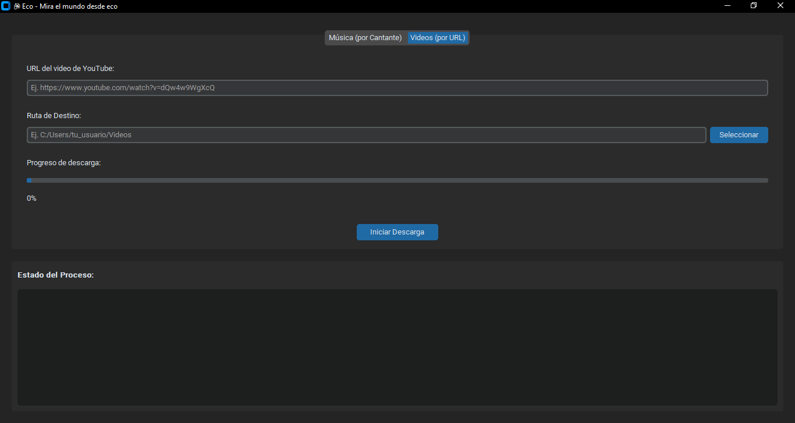

Hola, me llamo Antonio Tapia, estudio Ingeniería en Sistemas y soy un apasionado por la tecnología.
Me considero una persona autodidacta, con un gran interés por aprender y experimentar con nuevas herramientas y tecnologías para comprender cómo pueden mejorar procesos, optimizar costos y aumentar la eficiencia en los sistemas.
Desde mis primeros proyectos, he disfrutado analizar problemas y convertir ideas en soluciones prácticas, aplicando mis conocimientos en desarrollo web, backend, bases de datos y ciberseguridad.
Mi enfoque siempre ha sido buscar la forma más inteligente y rentable de hacer las cosas, aprovechando la innovación como un medio para reducir gastos operativos y potenciar la productividad.
Educación
Ingeniería en Sistemas
Universidad de Guayaquil
- Presente
Pasantia - Desarrollo & Soporte TI
Universidad de Guayaquil
-
Bachiller en Ciencias
Dr. Alfredo Raúl Vera Vera
-
Proyectos

Aplicacion para la Descarga de Musica - Eco V1
Desarrollé una aplicacion escritorio de codigo abierto enfocado en la reproducción y gestión de música local
Autenticación de usuarios con correo/contraseña, Google y recuperación de contraseña
Catálogo dinámico con filtros avanzados (categoría, precio, talla, etiquetas) y carrito persistente
Diseño responsive adaptado a escritorio y móviles
Gestión de perfil: edición de datos personales, direcciones y seguimiento de pedidos
Página de contacto con formulario y acceso directo vía WhatsApp
UI moderna: animaciones al hacer scroll, tarjetas con glassmorphism y componentes reutilizables
Promociones y destacados: sección de ofertas y productos más vendidos
Experiencia
Desarrollador Full-Stack
Freelance / Emprendimientos
- Presente
Diseño e implementación de soluciones completas (frontend + backend) para clientes y proyectos propios, con foco en eficiencia, seguridad y escalabilidad.
Responsabilidades principales
Desarrollo de arquitecturas modulares y componentes reutilizables.
Construcción de APIs REST y lógica de backend para integraciones con pasarelas de pago y sistemas legacy.
Automatización de procesos (ETL, reportes y notificaciones) y creación de dashboards para análisis de ventas.
Implementación de políticas de seguridad y control de acceso por roles (Auth + RBAC).
Optimización de rendimiento y reducción de costos de hosting/infraestructura.
Logros destacados
Implementé dashboards que redujeron el tiempo de reporte en un 70% (informes diarios a automatizados).
Reduje costos operativos en proyectos pequeños al migrar partes del stack a Firebase y hosting estático.
Entrega constante de MVPs en plazos cortos (2–4 semanas), mejorando validación temprana con clientes.
Pasantia - Desarrollo & Soporte TI
Universidad de Guayaquil - Facultad de Arquitectura
-
Apoyo en desarrollo web, administración de bases de datos y soporte técnico para asegurar disponibilidad y rendimiento de sistemas internos.
Tareas realizadas
Instalación y mantenimiento de software en equipos de oficina.
Soporte en impresoras y periféricos; resolución de incidencias de hardware y software.
Gestión y administración básica de bases de datos (backups, permisos y consultas).
Desarrollo y mantenimiento de sitios web institucionales aplicando buenas prácticas de usabilidad.
Documentación técnica de incidentes y procedimientos (base de conocimiento).
Tecnologías usadas
Sistemas operativos: Windows, Windows Server
Bases de datos: MySQL, PostgreSQL
Herramientas: Jira, Git, HTML/CSS/JS
Logros
Mejoré tiempos de resolución de incidencias al documentar procedimientos frecuentes.
Colaboré en la puesta en marcha de un sitio web institucional con mejores métricas de acceso.
Habilidades
Frontend
HTML
CSS
JavaScript
TypeScript
React
Vue
Vite
Backend
Python
Java
C / C++
C# / .NET
APIs
REST APIs
Firebase (Auth, Firestore, Storage)
Desarrollo Móvil
Ionic
Android Studio
Kotlin
Datos / IT
MySQL
PostgreSQL
PL/SQL
SQL
Oracle
Jasper Report
Power BI
Git
Jira
Linux
Windows Server
Redes LAN/WAN
ISO/IEC 27001
Habilidades Blandas
Trabajo en equipo
Comunicación efectiva
Resolución de problemas
Adaptabilidad
Cursos
¡Accede a mis certificaciones!
Escanea el código QR para ver mi perfil de cursos.